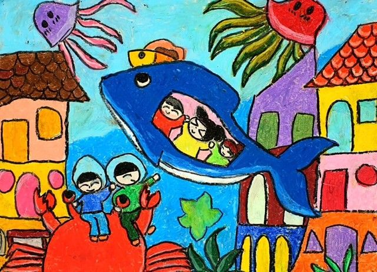
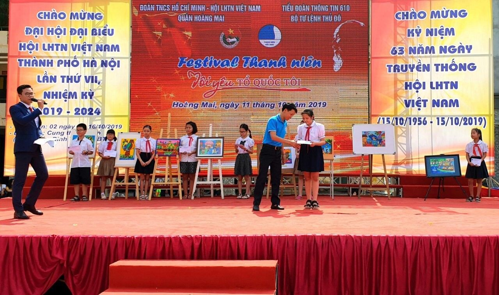

BÀI VIẾT VỀ TẤM GƯƠNG NGƯỜI TỐT – VIỆC TỐT THÁNG 11/2019
“Bạn Nguyễn Vũ Bảo Anh học giỏi, vẽ đẹp và rất hay giúp đỡ mọi người”. Đó là nhận xét của bạn Hải Đăng về bạn Bảo Anh đang là học sinh lớp 5A1, trường Tiểu học Yên Sở.
Nhìn khuôn mặt ngây thơ, hồn nhiên, vô tư nô đùa cùng bạn bè không ai có thể nghĩ rằng Bảo Anh lại trải qua một cuộc sống vất vả khó khăn so với các bạn cùng trang lứa đến vậy. Bố mẹ li hôn khi em mới lên bốn tuổi, mẹ và em chuyển về ở cùng bà ngoại tại tổ 20, phường Yên Sở, Hoàng Mai, Hà Nội. Ông bà ngoại em đều đã tuổi cao sức yếu, thường xuyên ốm đau, không có điều kiện về kinh tế. Mọi gánh nặng đều đè lên đôi vai gầy yếu của mẹ. Một mình mẹ vừa phải chăm sóc ông bà, vừa phải chăm lo cho em. Hằng ngày, mẹ phải đi bán hàng từ sáng sớm cho đến khoảng 9h tối mới về. Bảo Anh tâm sự: “Thường ngày mẹ em đi làm về rất khuya, đi học về em giúp mẹ nấu cơm, chăm sóc ông bà rồi học bài chờ đến khi mẹ về. Em rất thương mẹ, em cố gắng làm nhiều việc để đỡ đần cho mẹ, để mẹ em yên tâm đi làm kiếm tiền nuôi em và lo cho gia đình”.
Vượt qua hoàn cảnh gia đình khó khăn, em đã phấn đấu học tập tốt và trở thành tấm gương sáng trong học tập của nhà trường. Trong 4 năm học qua, Bảo Anh đều đạt học sinh giỏi toàn diện. Nhận xét về cô học trò nghèo vượt khó của mình, cô Lê Thị Thanh Hà – Giáo viên chủ nhiệm 5A1 cho biết: “Là một giáo viên chủ nhiệm, tôi nhận thấy rằng em Bảo Anh là một học trò ngoan, lễ phép, mặc dù hoàn cảnh gia đình khó khăn nhưng em cố gắng học tốt với một thành tích 4 năm liền em đều đạt học sinh giỏi toàn diện, đặc biệt em rất yêu thích vẽ và đạt nhiều giải cao trong các cuộc thi. Không chỉ học giỏi, chăm ngoan, trong những năm qua, Bảo Anh luôn nhiệt tình, sôi nổi tham gia các phong trào hoạt động của lớp, trường, Đội thiếu niên tiền phong Hồ Chí Minh.”
Chia sẻ về sở thích, bí quyết học tập cũng như ước mơ của mình, Bảo Anh cho biết em thích nhất môn Mỹ thuật, những lúc đặt bút vẽ em cảm thấy quên đi những mệt mỏi khó khăn trong cuộc sống, em có thể vẽ nhiều bức tranh về cuộc sống và vẽ cả về những ước mơ của bản thân, từ đó em thấy yêu đời và có thêm động lực học tập và làm việc. Chính vì niềm say mê với môn Mỹ thuật mà hàng ngày, em thường tranh thủ những lúc rảnh rỗi để tập vẽ. Em đã đạt được rất nhiều các giải cao trong các cuộc thi và lần gần đây nhất vào tháng 9 năm 2019, em đã tham gia cuộc thi vẽ với chủ đề “Thành phố tương lai” và đã giành được giải Nhất cấp Quận. Kết quả đó là niềm vui, niềm tự hào cho em, cho gia đình, thầy cô và bạn bè.

Bức tranh đạt giải Nhất cấp Quận trong cuộc thi “Thành phố tương lai”
của em Nguyễn Vũ Bảo Anh
Khi biết em đạt được giải Nhất trong cuộc thi, mẹ em xúc động chia sẻ: “Bảo Anh là cô bé ngoan, tự giác, tuy tuổi còn nhỏ nhưng đã hiểu được nỗi vất vả và biết chia sẻ những vất vả với mẹ. Tôi cảm thấy rất hạnh phúc và tự hào về con gái. Tôi mong mình luôn khỏe mạnh để có thể lo cho con, giúp con thực hiện được ước mơ”. Khi kể về con gái, mắt bác rưng rưng lệ nhưng miệng lại mỉm cười, nụ cười hạnh phúc, nụ cười của niềm tự hào với con gái của mình.

Bảo Anh nhận giải Nhất của cuộc thi “Thành phố tương lai”
Cô giáo Lê Thị Thanh Hà – Giáo viên chủ nhiệm lớp 5A1 chia sẻ: “Có lần em nói với cô, ước mơ của em là trở thành cô giáo dạy Mỹ thuật. Em muốn dạy những em nhỏ vẽ những bức tranh đáng yêu về cuộc sống, để các em thấy được cuộc sống muôn màu muôn vẻ và thêm yêu cuộc sống hơn. Đồng thời em cũng có thể kiếm tiền để đỡ đần mẹ và chăm lo cho mẹ khi tuổi già”.
Bảo Anh thầm hứa với bản thân phải cố gắng hơn nữa để không phụ lòng thầy cô và mẹ. Tấm gương cô học trò Bảo Anh là một tấm gương sáng của các bạn học sinh nghèo vượt khó học tốt, giàu nghị lực, ý chí vượt lên hoàn cảnh và cố gắng trong học tập. Hy vọng ước mơ của cô gái bé nhỏ Bảo Anh sẽ sớm thành hiện thực. Chúc cho em luôn thành công trên con đường chinh phục ước mơ của mình.